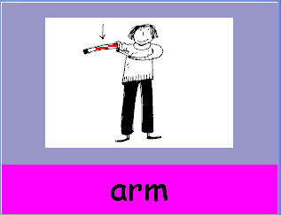
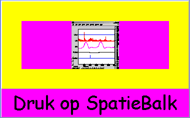
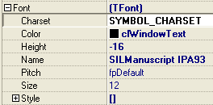
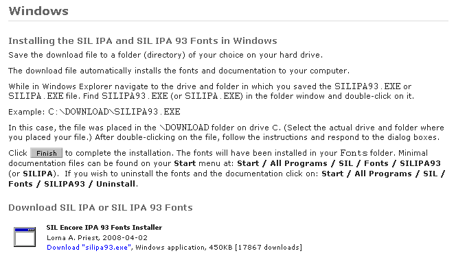
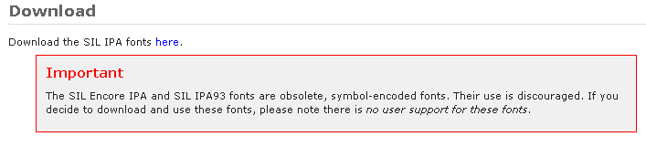

januari 2008
Test Aanmaken
Inleiding
Het programma toont achtereenvolgens een aantal plaatjes (of teksten), waarbij het kind bij ieder plaatje het afgebeelde woord moet uitspreken, dit noemen we in het vervolg een "taak". De door het kind uitgesproken tekst wordt opgenomen in een audio bestand. Om het kind wat te laten ontspannen, wordt af en toe tussen de opdrachten door een "beloning" gegeven (leuk plaatje, animatie o.i.d.).
Alle opdrachten die achtereenvolgens in één keer worden afgenomen, noemen we een "test".
Opdracht
Een opdracht heeft een aantal gemeenschappelijk parameters (die dus voor alle opdrachten gelijk zijn)
Daarnaast zijn er een aantal opdracht specifieke parameters:
|
 |
Links een voorbeeld van een plaatje dat op 80% wordt afgebeeld. Bij ieder plaatje kan een geluidsfragment worden toegevoegd. In dit voorbeeld kent het gebruikte plaatje geen transparantie, waardoor het achtergrond plaatje niet zichtbaar is. |
Omdat het woord soms niet of minder geschikt is, kunnen er bij iedere opdracht één of meerdere alternatieven worden toegevoegd. Het aantal alternatieven is in principe onbeperkt. Ieder alternatief heeft exact dezelfde instelmogelijkheden als een normale opdracht.
Beloning
Om het kind wat afwisseling te bieden en geboeid te houden, wordt om een aantal opdrachten een beloning gegeven. Een beloning is een leuk plaatje, animatie of zelfs iets interactiefs. In de test staat aangegeven hoe de beloning moet worden gegeven. Bij het starten van de test kan de belonings-frekwentie verhoogd of verlaagd worden, dit kan overigens ook tijdens de test. Daarnaast kan op ieder moment als de gebruiker dan noodzakelijk acht, een extra beloning worden gegeven. De volgende mogelijkheden zijn geïmplementeerd als beloning: plaatje, AVI animatie, MOV - filmpje, Uitvoerbaar Programma. Het beloningsvenster is even groot als het taakveld (in onderstaande figuur het paarse vlak middenin), maar de kleur van het omliggende gebied kan afwijkend worden ingesteld, zodat in een oogopslag duidelijk is of het een taak betreft dan wel een beloning. Het opgegeven plaatje / filmpje wordt (in de juiste verhouding) zo groot mogelijk weergegeven. Er wordt geen geluidsfragment afgespeeld, omdat een animatie of filmpje zelf al een ingebouwd geluid kunnen hebben.
In het algemeen, wordt bij de beloning het volgende protocol gevolgd:

Beloning: Plaatjes GIF, JPG, JPEG, BMP, ICO, EMF, WMF, PNG
Het plaatje wordt zo groot mogelijk (wel in de juiste hoogte/breedte verhouding) weergegeven. Daarnaast kan er per plaatje een individuele tekst onderin beeld worden weergegeven. Het plaatje wordt gedurende een bepaalde tijd weergegeven. Deze tijd wordt éénmalig opgegeven voor alle plaatjes, maar kan per plaatje korter worden ingesteld. Als tijdens het weergeven op de Grote Knop wordt gedrukt, verschijnt de tekst "Goed Zo !", de volgende taak wordt verkregen door op de spatiebalk te drukken. Als er niet op de Grote Knop wordt gedrukt, maar de tijd is verstreken, verschijnt de standaard tekst "Druk op SpatieBalk" teneinde door te gaan naar de volgende taak.
Beloning: AVI Animatie
Hier kan een AVI animatie worden weergegeven, eventueel voorzien van een tekst. De AVI file moet wel van redelijke kwaliteit zijn, om goed te worden weergegeven (bijvoorbeeld aangemaakt met AnimationShop van Jasc). AVI bestanden met een heel klein formaat (bv 32*32 pixels) hebben in het algemeen erg veel moeite in de juiste verhouding geschaald te worden. Bij het indrukken van de Grote Knop, wordt de animatie gestopt en verschijnt de tekst "Goed Zo !". Door dus in de basis tekst bij een plaatje een opdracht te zetten, zoals "Stop het plaatje als de wijzer op de 6 staat" kan op een simpele wijze een interaktieve beloning worden gecreëerd. Als de animatie is afgelopen, stopt deze vanzelf en verschijnt de tekst "Druk op SpatieBalk" .
Beloning: AVI overig
De meeste AVI bestanden (dit kunnen ook hele films zijn) kunnen worden afgespeeld (afhankelijk van de aanwezige windows mediaplayer). Hiervoor geldt verder hetzelfde als voor de AVI-animatie.
Beloning: MOV filmpje
Dit is een formaat dat wordt gebruikt door de meeste digitale foto camera's. Er kan weer tekst worden bijgeplaatst in de vorm van een opdracht, want ook hier geldt, de Grote Knop stopt het filmpje en laat de tekst "Goed Zo !" verschijnen.
Beloning: Uitvoerbaar Programma
In principe kan ieder windows programma worden gestart (hierbij kan worden gedacht aan bestaande spelletjes). Nadat het opgegeven windows programma is gestart, wordt het spraakprogramma stilgelegd en geminimaliseerd, totdat het opgestarte programma is afgesloten. Het spraak programma kan uiteraard tijden het draaien van het externe programma geen invloed uitoefenen op het externe programma.
Fonetisch Font
SIL Doulos IPA-93
Manuscript = monospaced
IPA Transcription with SIL Fonts


Opbouw van het test bestand
Het bestand is opgebouwd als een standaard ini-formaat. Het bestand bevat de volgende 3 secties:
|
[Algemeen] |
Toelichting |
|
Version=2.0 |
n.v.t. |
|
Titel=Test Stef |
voor de gebruiker herkenbare omschrijving, wordt in de lijst met testen gebruikt |
|
AantalOpdrachten=2 |
n.v.t. |
|
BGcolor = 200,150,150 |
Achtergrond kleur (RGB-code) |
|
BGImage = bloem.bmp |
Achtergrond plaatje |
|
BGSize = 40 |
Percentuele grootte van het achtergrond plaatje |
|
ImageSize = 80 |
Percentuele grootte van de taak plaatjes |
|
Beloning Iedere = 5 |
Om de hoeveel taken een beloning wordt gegeven |
|
Max_Beloning_Duur = 20 |
Maximale duur (in seconden) van een beloning |
|
Beloning_Einde_Text = Druk op SpatieBalk |
De tekst die aan het einde van een beloning verschijnt |
|
CommPort = 1 |
n.v.t. |
plaatje ~ geluid ~ tekst ~ achtergrond plaatje ~ ???? ~ achtergrond kleur
In het algemeen zullen enkel de eerste 3 elementen worden gebruikt
[Opdrachten]
1.0 = arm.bmp~bloed.wav~arm
1.1 = bloed.bmp~bloed.wav~bloed~arm.bmp
1.2 = beer.bmp~brief.wav~brief~~250,10,10
1.W = arm
1.T = <fonetische spelling>
2.0 = hier proberen we \n een \n tekst~bus.wav
2.1 = beer.bmp~brief.wav
beloning ~ max tijd ~ eind tekst
[Beloning]
1 = scilab_img2.png
2 = clock.avi~~Wacht tot 6
3 = mote_prototype.jpg~2
=======================================
Opbouw Antwoord bestand
[Uitspraak]
U_1=.AuÖto.
U_2=.bþþS
M_2=.bþþAlþ. <== modified target alleen opgeslagen als afwijkt van target